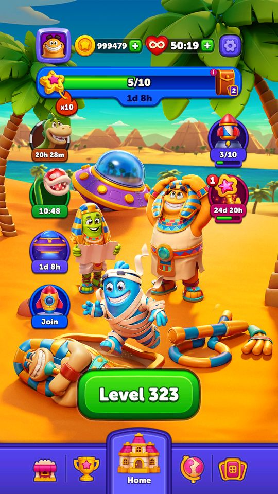
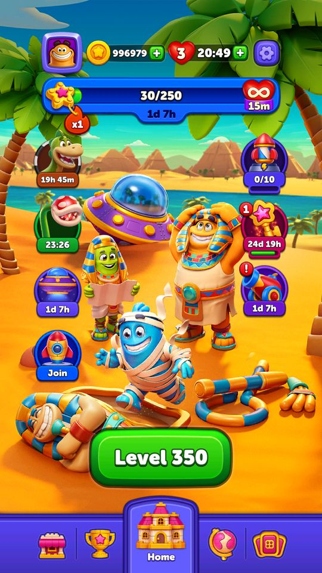

Màn hình chính và điều hướng
Màn Home là một bộ trang vuốt ngang: PageType liệt kê 8 trang (Shop, Leaderboard, Home, Daily, Settings, Journey, Collection).
Mô tả
- Màn Home là một bộ trang vuốt ngang: PageType liệt kê 8 trang (Shop, Leaderboard, Home, Daily, Settings, Journey, Collection).
- Toolbar là thanh thông tin bật lên theo bối cảnh — nó có bảy cách dựng thân khác nhau tuỳ sự kiện đang chạy.
Còn thiếu / chưa xác minh
Mở khóa & điểm vào
Luôn hoạt động.
Điểm vào:
- Sau khi khởi động xong
- Sau mỗi màn chơi
Cách hoạt động
- HomeController điều phối; NavigationManager và SwipePageManager (33 method) lo chuyển trang bằng vuốt; SwipePageController, SwipeMenuManager, SwipeMenuScaleHandler lo hiệu ứng.
- ToolbarService (45 method) dựng thanh thông tin: ConstructToolbarBody là bản chung, còn ConstructMagicPassToolbarBody, ConstructJetpackToolbarBody, ConstructDailyToolbarBody, ConstructSkyJumpToolbarBody, ConstructTowerToolbarBody, ConstructPlainTextToolbarBody là các biến thể theo ToolbarContext (SkyJump, Tower, JetpackRace, Daily, EndlessPortal, PlainText, MagicPass, Null).
- Lưu ý Tower và EndlessPortal là di sản Magic Sort — Block Out không có hai tính năng đó.
- ToolbarAssetColor có 7 màu và ToolbarDirection quyết định thanh bật lên hay xuống.
- LobbyEventsPositionManager sắp xếp các biểu tượng sự kiện quanh màn Home; HomeBackgroundController và ArenaHomeBackgroundController đổi nền; ProgressScrollController hiện tiến độ; HomeTutorialController lo hướng dẫn lần đầu.
Luồng chi tiết theo code
HomeController điều phối; NavigationManager và SwipePageManager (33 method) lo chuyển trang bằng vuốt; SwipePageController, SwipeMenuManager, SwipeMenuScaleHandler lo hiệu ứng. ToolbarService (45 method) dựng thanh thông tin: ConstructToolbarBody là bản chung, còn ConstructMagicPassToolbarBody, ConstructJetpackToolbarBody, ConstructDailyToolbarBody, ConstructSkyJumpToolbarBody, ConstructTowerToolbarBody, ConstructPlainTextToolbarBody là các biến thể theo ToolbarContext (SkyJump, Tower, JetpackRace, Daily, EndlessPortal, PlainText, MagicPass, Null). Lưu ý Tower và EndlessPortal là di sản Magic Sort — Block Out không có hai tính năng đó. ToolbarAssetColor có 7 màu và ToolbarDirection quyết định thanh bật lên hay xuống. LobbyEventsPositionManager sắp xếp các biểu tượng sự kiện quanh màn Home; HomeBackgroundController và ArenaHomeBackgroundController đổi nền; ProgressScrollController hiện tiến độ; HomeTutorialController lo hướng dẫn lần đầu.
Ảnh chụp màn hình (11)
11 ảnh chụp trong game (LDPlayer, bản 1006, tài khoản thử level 320 → 350 (07/10/2026)). Bấm ảnh để phóng to; nhãn UC dẫn tới use case tương ứng.

 5 mạng Full; cột trái 3 icon sự kiện (Join / Finished / Join), cột phải icon tên lửa 0/10 và icon pháo (Finished, dấu !); poster nền Ai Cập; thanh dưới Shop, Leaderboard, Home, bản đồ, bộ sưu tập
5 mạng Full; cột trái 3 icon sự kiện (Join / Finished / Join), cột phải icon tên lửa 0/10 và icon pháo (Finished, dấu !); poster nền Ai Cập; thanh dưới Shop, Leaderboard, Home, bản đồ, bộ sưu tập
 300 coin Daily Gift, mạng vô hạn 26:56 (thưởng pass), icon Block Pass (chìa, còn 24 ngày 21 giờ) thêm vào cột phải
300 coin Daily Gift, mạng vô hạn 26:56 (thưởng pass), icon Block Pass (chìa, còn 24 ngày 21 giờ) thêm vào cột phải


 30 phút mạng vô hạn) đẩy các icon xuống; Super Rocket 1/10; icon Block Pass có huy hiệu 1 (chìa mới)
30 phút mạng vô hạn) đẩy các icon xuống; Super Rocket 1/10; icon Block Pass có huy hiệu 1 (chìa mới)



 4 mạng, Star Blaze x1, Super Rocket 0/10, Lily Leap chờ lượt mới 29:52
4 mạng, Star Blaze x1, Super Rocket 0/10, Lily Leap chờ lượt mới 29:52

Use case (4)
Bấm vào từng use case để mở. Mở/đóng tất cả
UC-01 Vuốt chuyển trang
Các bước- SwipePageManager nhận thao tác
- NavigationManager đổi PageType
- SwipeMenuScaleHandler chỉnh tỉ lệ các trang lân cận
| Actor | Player |
|---|---|
| Trigger | Vuốt ngang ở màn Home |
| Điều kiện | - |
| Kết quả | Chuyển sang Shop / Leaderboard / Daily / Settings / Journey / Collection |
| Quy tắc / số liệu | PageType: None=0, Shop=1, Leaderboard=2, Home=3, Daily=4, Settings=5, Journey=6, Collection=7 |
| Evidence | SwipePageManager; NavigationManager; enum PageType |
UC-02 Toolbar đổi hình theo sự kiện
Các bước- SetToolbarModel(toolbarModel) với ToolbarContext tương ứng
- Gọi đúng hàm Construct*ToolbarBody
- SetToolbarAssetForColor() chọn màu theo ToolbarAssetColor
- ToolbarOpenAnimation() bật lên theo ToolbarDirection
| Actor | System |
|---|---|
| Trigger | Mở toolbar khi có sự kiện |
| Điều kiện | - |
| Kết quả | Cùng một thanh nhưng nội dung khác nhau tuỳ bối cảnh |
| Quy tắc / số liệu | 7 hàm dựng thân; hai trong số đó (Tower, EndlessPortal) là di sản Magic Sort không dùng ở Block Out |
| Evidence | ToolbarService.SetToolbarModel; ConstructMagicPassToolbarBody; enum ToolbarContext; enum ToolbarAssetColor |
UC-03 Sắp xếp biểu tượng sự kiện
Các bước- LobbyEventsPositionManager tính vị trí cho từng biểu tượng
- Mỗi service sự kiện có IsLobbyIconVisible() riêng
| Actor | System |
|---|---|
| Trigger | Nhiều sự kiện cùng chạy |
| Điều kiện | - |
| Kết quả | Màn Home không bị chồng chéo biểu tượng |
| Quy tắc / số liệu | - |
| Evidence | LobbyEventsPositionManager; MagicPassService.IsLobbyIconVisible; TreasureDrillService.IsLobbyIconVisible |
UC-04 Chờ người chơi rảnh mới mở popup
Các bước- HomeIdleDetectionManager theo dõi PlayerIdleState
- OnUIElementTouchDown() và CheckForInput() phát hiện thao tác
- Idle thì mới cho popup mở
| Actor | System |
|---|---|
| Trigger | Về Home |
| Điều kiện | - |
| Kết quả | Không chen ngang thao tác đang dở |
| Quy tắc / số liệu | - |
| Evidence | HomeIdleDetectionManager; ToolbarService.CheckForInput; enum PlayerIdleState |
Cấu hình (3)
Gộp mọi nguồn: const trong code, JSON mặc định trong Resources, bảng static, storage key, AB test, cờ server.
| Nguồn | Key | Kiểu | Giá trị | Ý nghĩa | Nơi định nghĩa |
|---|---|---|---|---|---|
| code const | PageType | enum | None=0, Shop=1, Leaderboard=2, Home=3, Daily=4, Settings=5, Journey=6, Collection=7 | 8 trang của màn Home | enum PageType |
| code const | ToolbarContext | enum | SkyJump=0, Tower=1, JetpackRace=2, Daily=3, EndlessPortal=4, PlainText=5, MagicPass=6, Null=7 | 8 bối cảnh; Tower và EndlessPortal là di sản Magic Sort | enum ToolbarContext |
| code const | ToolbarAssetColor / ToolbarDirection | enum | Purple, Green, Blue, Pink, Gold, DarkPurple, DarkPink / Default, Up, Down | Màu và hướng bật của toolbar | enum ToolbarAssetColor, ToolbarDirection |
Chưa đọc được / ghi chú
- ToolbarService.GetRandomRewardModel / GetRandomRewards sinh phần thưởng ngẫu nhiên để hiển thị minh hoạ trong toolbar — chưa xác minh được đây chỉ là hình ảnh hay có ảnh hưởng tới thưởng thật.
Tính năng liên quan
Giới hạn popup Cửa hàng Bảng xếp hạng thường trực (thế giới / quốc gia) Journey (mốc thưởng theo tiến độ) Bộ sưu tập thẻ Cài đặt
Nguồn đã đọc
- PseudoC/.../Home/UI/*.c